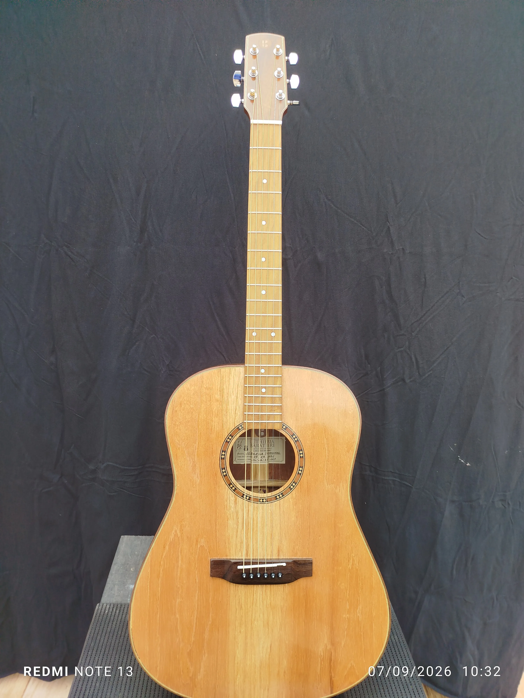

Nobrega Violão Folk Baratieri

Madeiras
- Tampo
- Cedro Rosa
- Fundo e laterais
- Imbuia
- Braço
- Cedro Rosa
- Escala
- Pau-ferro
- Cavalete
- Jacarandá
Componentes
- Tarraxas
- Blindadas Thida
- Filetes / marchetaria
- Imbuia com filetes claros
- Acabamento
- Goma Laca Indiana Clarificada
- Trastes
- Sanko 2.4
- Nut
- Osso legítimo
- Rastilho
- Osso legítimo
- Headstock
- Modelo Baratieri com filetes
- Bitola máxima
- .011 — Custom Light
- Preço
- R$ 5.000,00
- Identificação
- BL-26-VF-001
Nóbrega é um nome que carrega uma história diferente das demais: não vem do tupi, mas de gente — uma homenagem ao Igor Nóbrega, para quem este violão foi feito sob medida. E é um instrumento à altura do nome: presença, personalidade e um timbre que impõe respeito desde o primeiro acorde.
O tampo em cedro rosa maciço entrega aquela resposta rápida e quente que só essa madeira dá — ótimo para quem gosta de sentir a corda "abrir" já nos primeiros toques. No fundo e laterais, a imbuia traz densidade e um médio encorpado, com um desenho de fibra bonito e único em cada corte, valorizado ainda mais pelos filetes claros que contornam a caixa. O braço, também em cedro rosa, segue a mesma linha do tampo — leveza aliada a estabilidade — com escala em pau-ferro, madeira densa que garante boa resposta e durabilidade nos trastes.
O cavalete em jacarandá é outro detalhe que faz diferença na sustentação e na transmissão de vibração para o tampo. As tarraxas blindadas Thida garantem afinação firme e duradoura, enquanto trastes Sanko 2.4 completa o conjunto com acabamento refinado nos detalhes metálicos. O acabamento em goma-laca indiana clarificada realça o veio natural de cada madeira, sem esconder a identidade do instrumento — cada peça sai da bancada com um desenho que não se repete.
Um Folk Baratieri feito para carregar um nome — e para tocar à altura dele: corpo cheio, projeção sonora que enche a sala e aquele acabamento que só a goma-laca artesanal consegue dar.